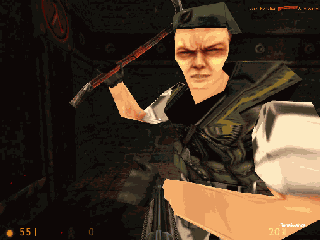

Half-Life® was built following a client/server architecture. The game engine itself, in charge of the 3D display, sound processing, movement calculations, virtual world's physic rules appliance, and player commands handling (such as joining, saving, key binding through the console...) can be described as the 'server' whereas the player side DLL, in charge of passing the previously mentioned player commands to the engine in the form of network packets can be described as the client.
When installed for a MOD, the RACC DLL locates itself between the server and the client DLLs and passes network packets from one to the other transparently. As a sort of 'hijacking' of the server/client relation, the DLL can thus intercept interesting information packets from the engine, but foremost can fake connections from other clients on the fly.
Please welcome the bots.
Dumb clients, when spawned in the virtual world, need to be controlled at each frame of the game. That's where the DLL hijacks the StartFrame() function call, which exists at each frame of the elapsed virtual time, to add its own code to make the fake clients think. Before calling the engine's actual StartFrame() function, the DLL cycle through all the fake clients and call a BotThink() function for them.
The BotThink() function is the core of a cybernetic character's AI. This function is in charge of many checks to determine if the bot needs to move, check for enemies, do some particuliar action such as taunting its opponents or asking backup from his team, etc. The wanted behaviour is then run by calling the appropriate function in the according behaviour domain: navigation, combat, chat, etc. It is obvious that none of these functions must loop. Each one has to terminate and return in the frame time it was called.
Deathmatch Classic: a bot armed with a crowbar

For each frame, the whole decisional AI of every bot is entirely self-contained within that BotThink() function. Tracing deeper through this function will show up many function calls, pointing at different locations within the code, depending on whatever situation the cybernetic character is in: sampling the field of view, handling ladder movement, firing at a visible enemy threat...
On the other side, the reactive AI, handling reflexes and unconscious reactions, is a client-side implementation (cf. bot_client.cpp) which gets called whenever network messages are sent from the server engine to the clients. This can occur when the cybernetic character gets damaged by invisible enemy fire, for example. This is essentially a sensorial part in the AI layout. While the decisional AI voluntarily polls its sensors to retrieve information about the virtual world, the reactive AI punctually senses the environment, influented by external stimuli.
Here is how bots think.
If you are interested in deeper source code explanation, more technical info can be found in Botman's original readme.txt supplied with his HPB bot template. This is a complete tutorial to HPB hacking. Really worth a look.
Botman also wrote a C++ tutorial that explains very well the basis on C++ classes and inheritances. Although C knowledge is sufficient to hack the bot code, programmers should be aware that the interface with the Half-Life engine is written in C++.
The Rational Autonomous Cybernetic Commandos source code is open for anyone to view and use. Strong emphasis has been put on correctness, cleanliness, readability and commenting.
Use the source, Luke!

Avtomat Kalashnikov AK-47